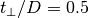

The Dimer  phase diagram on temperature¶
Collect data on double occupation and plot the phase diagram
Traceback (most recent call last):
File "/home/oscar/dev/sphinx-gallery/sphinx_gallery/gen_rst.py", line 453, in execute_code_block
exec(code_block, example_globals)
File "<string>", line 12, in <module>
File "/home/oscar/.virtualenvs/dev3/lib/python3.6/site-packages/numpy-1.13.0-py3.6-linux-x86_64.egg/numpy/lib/npyio.py", line 370, in load
fid = open(file, "rb")
FileNotFoundError: [Errno 2] No such file or directory: 'met_tp0.5_UTd.npz'
# Author: Óscar Nájera
from __future__ import division, absolute_import, print_function
import argparse
import re
from glob import glob
import numpy as np
from matplotlib.mlab import griddata
import matplotlib.pyplot as plt
data = np.load('met_tp0.5_UTd.npz', encoding='bytes')
md_list, mtemp_list, mu_list = data['docc'], data['temp'], data['u_int']
data = np.load('ins_tp0.5_UTd.npz', encoding='bytes')
id_list, itemp_list, iu_list = data['docc'], data['temp'], data['u_int']
# Join double occupation results
x = np.concatenate(list(mu_list) + list(iu_list))
y = np.concatenate(list(mtemp_list) + list(itemp_list))
z = np.concatenate(list(md_list) + list(id_list))
# define plot grid.
xi = np.linspace(1.4, 2.2, 150)
yi = np.linspace(0, 0.04, 150)
# Grid the data
zi = griddata(x, y, z, xi, yi, interp='nn')
CS = plt.contourf(xi, yi, zi, 15, cmap=plt.get_cmap('viridis'))
plt.colorbar() # draw colorbar
plt.scatter(np.concatenate(mu_list), np.concatenate(mtemp_list),
c=np.concatenate(md_list), s=70, vmin=0.036, vmax=0.12,
cmap=plt.get_cmap('viridis'), marker='o', edgecolor='k')
plt.scatter(np.concatenate(iu_list), np.concatenate(itemp_list),
c=np.concatenate(id_list), s=30, vmin=0.036, vmax=0.12,
cmap=plt.get_cmap('viridis'), marker='o', edgecolor='k')
plt.xlim([min(xi), max(xi)])
plt.ylim([min(yi), max(yi)])
plt.xlabel(r'$U/D$')
plt.ylabel(r'$T/D$')
Total running time of the script: ( 0 minutes 0.000 seconds)